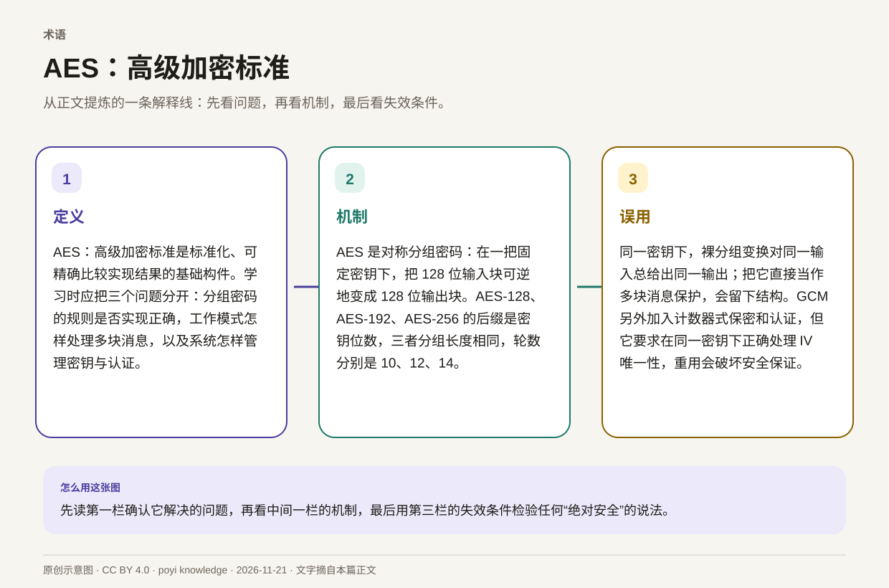

原理与机制
AES 是对称分组密码：在一把固定密钥下，把 128 位输入块可逆地变成 128 位输出块。AES-128、AES-192、AES-256 的后缀是密钥位数，三者分组长度相同，轮数分别是 10、12、14。
状态是 16 个字节。初始 AddRoundKey 后，普通轮依次进行 SubBytes、ShiftRows、MixColumns、AddRoundKey；末轮省去 MixColumns。密钥扩展产生所需轮密钥。SubBytes 是非线性替换，行移位与列混合共同扩散字节影响；不是单独某一步就能解释全部安全性。

为什么重要
它是标准化、可精确比较实现结果的基础构件。学习时应把三个问题分开：分组密码的规则是否实现正确，工作模式怎样处理多块消息，以及系统怎样管理密钥与认证。通过一组标准测试向量，只证明该输入输出吻合，不能证明实现没有侧信道或整个应用安全。
应用与实例
一个明确的应用是 TLS 1.3：RFC 9846（取代 RFC 8446）列出 AES-GCM 和 AES-CCM 套件，也列出 ChaCha20-Poly1305。因而不能说 AES 是唯一现代选择，更不能把 AES-ECB 称作 TLS 1.3 的 AEAD 套件。AES 本身处理一个分组；这些协议使用的是带明确模式与参数的完整构造。
边界与攻击面
同一密钥下，裸分组变换对同一输入总给出同一输出；把它直接当作多块消息保护，会留下结构。GCM 另外加入计数器式保密和认证，但它要求在同一密钥下正确处理 IV 唯一性，重用会破坏安全保证。
这里不把生日碰撞界当成 AES 密钥位数，也不宣称算法名称能担保实现。后面的 ECB 单块例子只用于核验 AES 变换，绝不是推荐用 ECB 保护消息。
历史与背景
NIST 在 1997 年启动 AES 选择流程，2000 年 10 月 2 日宣布选择 Rijndael，FIPS 197 于 2001 年公布。2023 年更新改善了文档编辑与说明，没有改变算法。这些时间点应区别于征集、候选评审和标准生效，不可混成一次获胜。
逐步示例与核验
仅核验单块变换：密钥 2b7e151628aed2a6abf7158809cf4f3c，输入 6bc1bee22e409f96e93d7e117393172a，输出 3ad77bb40d7a3660a89ecaf32466ef97。出处是 NIST SP 800-38A 附录 F.1.1 第一块；verify.mjs 调用 Node/OpenSSL 重新计算，并验证逆变换。所有值都是公开测试向量，不是可复用的真实密钥。
参考出处
- NIST, FIPS 197-upd1, Advanced Encryption Standard (AES), 2023
- NIST, AES Development archive
- NIST CSRC, FIPS 197 publication page
- Morris Dworkin, NIST SP 800-38A, Recommendation for Block Cipher Modes of Operation, 2001
- Morris Dworkin, NIST SP 800-38D, GCM and GMAC, 2007
- Eric Rescorla, RFC 9846, The Transport Layer Security (TLS) Protocol Version 1.3; obsoletes RFC 8446